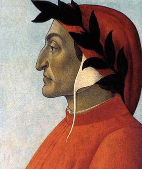
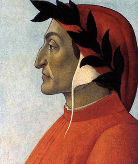

Краткое описание
Божественная комедия Данте - это эпос на латинском языке, написанный итальянским поэтом Данте Алигьери в 14-ом веке. Он описывает путешествие героя, Данте, через ад, чистилище и рай и его встречу с Богом. Книга рассматривает темы религии, справедливости и мудрости.
- Лимб: первый круг ада, где обитают души добродетельных нехристиан, включая философов, поэтов и других великих мыслителей.
- Похоть: второй круг Ада, где наказываются души тех, кто согрешил через плотское желание. Этот круг предназначен для тех, кто позволил своим желаниям управлять своими действиями.
- Чревоугодие: третий круг Ада, где наказываются души тех, кто согрешил из-за чрезмерной еды и питья. Этот круг предназначен для тех, кто позволил своей страсти поглотить себя.
- Жадность: четвертый круг Ада, где наказываются души тех, кто согрешил из-за жадности. Этот круг зарезервирован для тех, кто позволил своей алчности поглотить их.
- Гнев: пятый круг Ада, где наказываются души согрешивших гневом. Этот круг предназначен для тех, кто позволил своему гневу поглотить себя.
- Ересь: шестой круг Ада, где наказываются души отрекшихся от веры. Этот круг предназначен для тех, кто отверг религиозные верования своего времени.
- Насилие: седьмой круг Ада, где наказываются души тех, кто согрешил посредством насилия. Этот круг предназначен для тех, кто позволил своей склонности к насилию контролировать свои действия.
- Мошенничество: восьмой круг Ада, где наказываются души тех, кто согрешил через обман. Этот круг предназначен для тех, кто использовал ложь и обман, чтобы манипулировать другими.
- Предательство: девятый и последний круг Ада, где наказываются души тех, кто согрешил через предательство. Этот круг зарезервирован для тех, кто предал самых близких, включая семью, друзей и страны.
Второй круг: Похоть
Во втором круге ада Данте находятся люди, которые жили без любви и дружбы. Это место называется "Лукавость" и находится под землёй, внизу пирамиды расстояний между кругами ада. В этом круге они пребывают в вечной мерзлоте и страдают от жара. Они окружены сильным ветром, который не даёт им никакого успокоения и крутит их в вечной метели. Это место наказания для тех, кто жил жизнь без дружбы и любви, кто был самонадеян и игнорировал других. Это круг наказания для тех, кто жил жизнь только для своих собственных целей, без сочувствия и понимания других людей.Второй круг ада охраняет Минос — несговорчивый судья проклятых. Страстных любовников и прелюбодеев
Пятый круг: Гнев
В канонической версии сюжета "Божественной комедии" Данте, Пятый круг Ада предназначен для тех, кто совершил грех сострадания. Этот круг находится на нижней части Циклона и разделен на две части: Подземелье для изменников и Ледяное море для твердости сердца.Подземелье для изменников - это место, где души людей, которые изменили своим друзьям или покровителям, погружаются в бесконечно глубокую яму, которую они никогда не смогут выбраться. Они всегда будут видеть друг друга и осознавать свою измену, но никогда не смогут дотянуться до друг друга.Ледяное море - это место, где души людей, которые совершили грех твердости сердца и отказались от сострадания и любви, затвердевают в ледяных блоках.
Девятый круг: Предательство и ложь
9-й круг ада, предназначенный для самых ужасных преступников. Здесь обитель предателей и изменников, из них величайшие — Иуда, Брут и Кассий, — их грызёт своими тремя пастями Люцифер, восставший некогда на Бога ангел, царь зла, обречённый на заключение в центре земли. 9 круг ада, является частью ада, где наказываются лжецы и дельцы. Этот круг ада состоит из круглого моря, покрытого льдом, в котором предатели и лжецы оказываются замороженными до самого горла в воде. Они также могут быть прикованы к льду и простоять там навсегда.